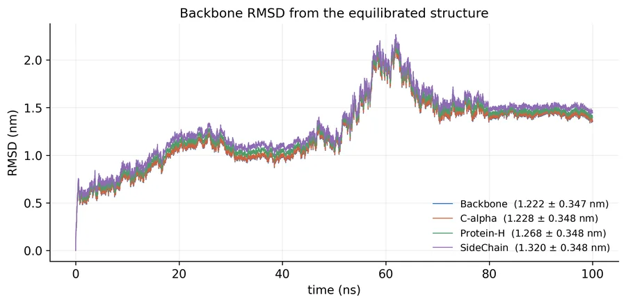
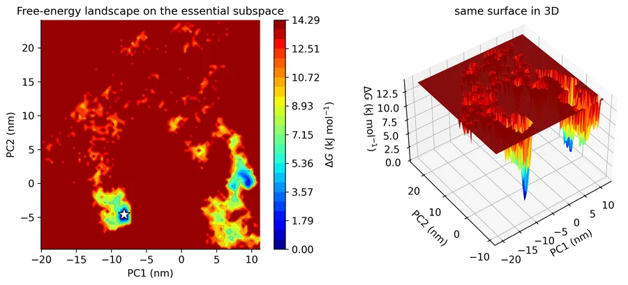
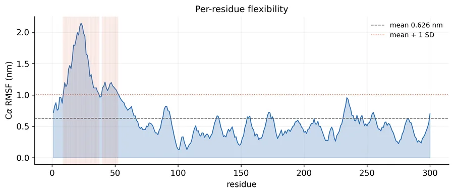
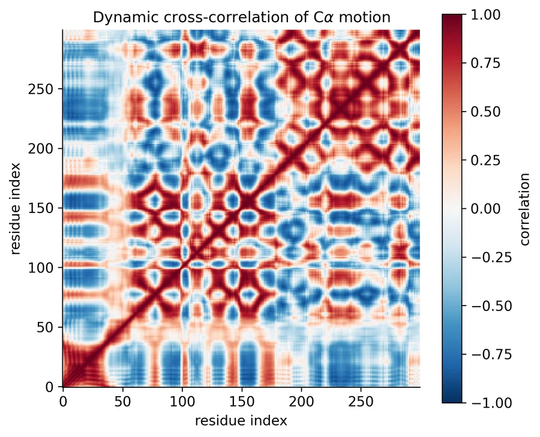
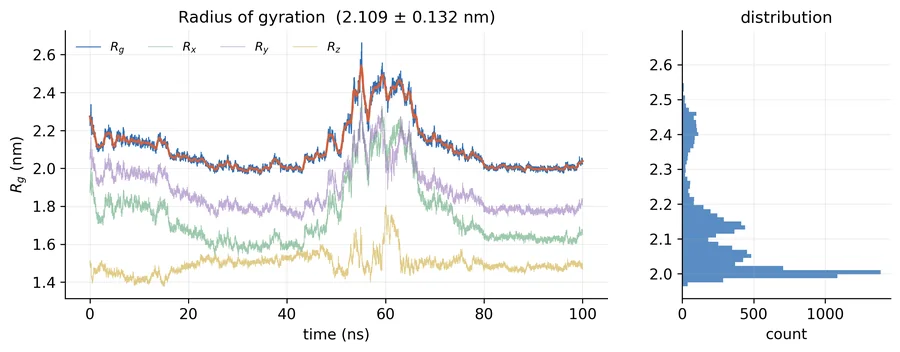
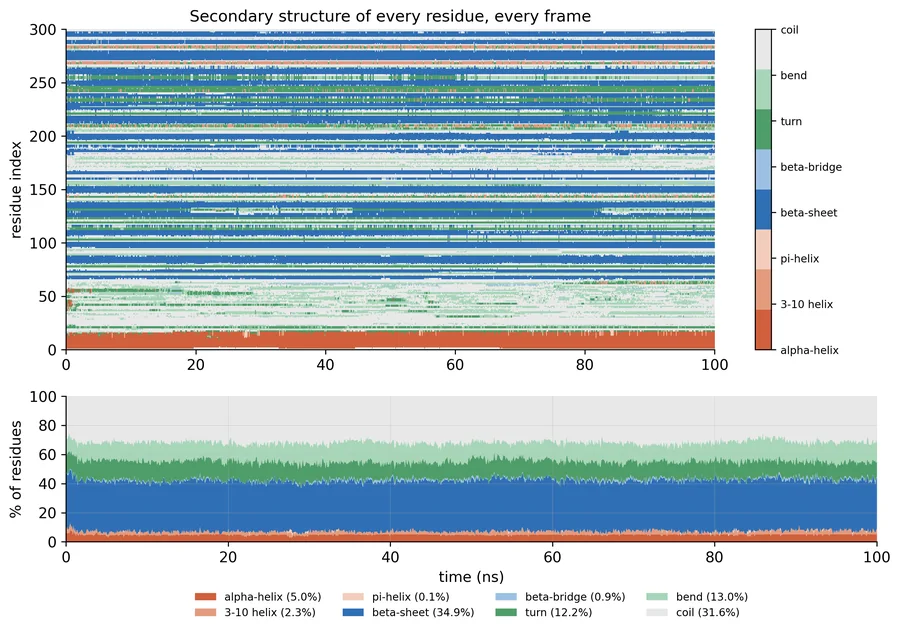
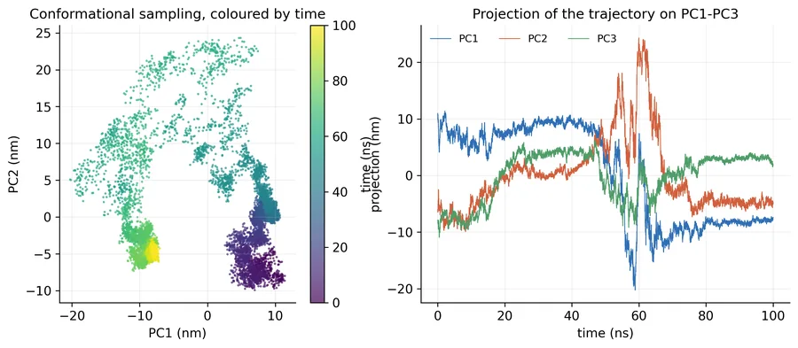
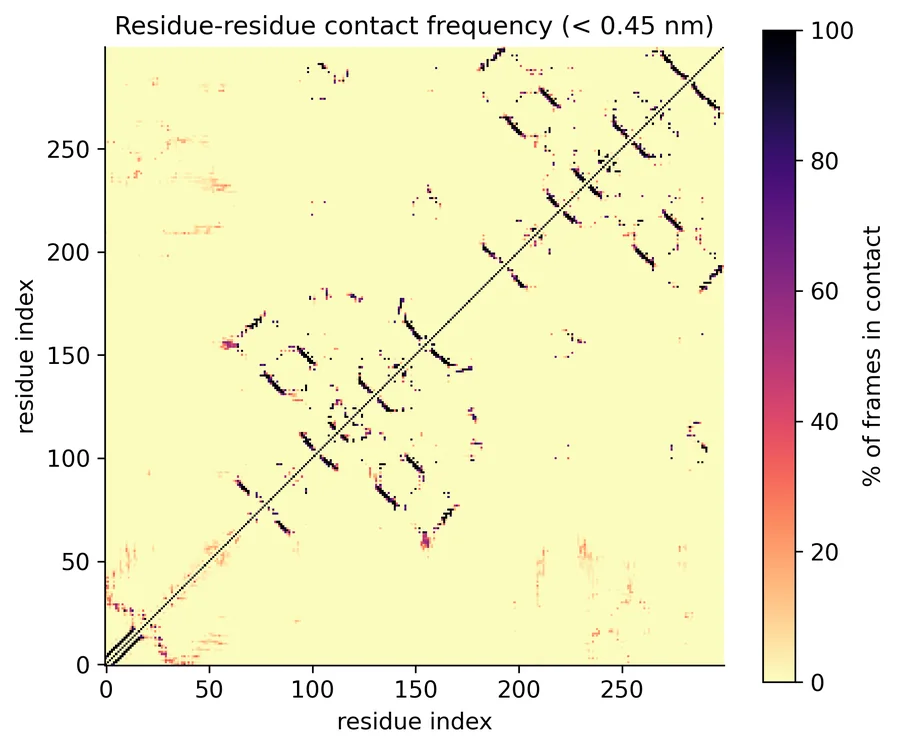
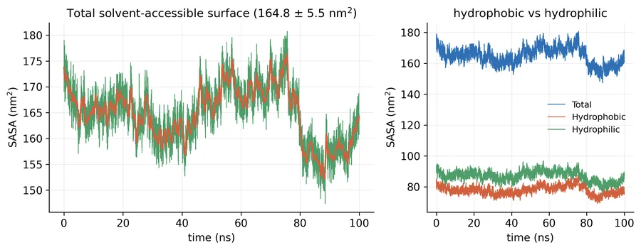
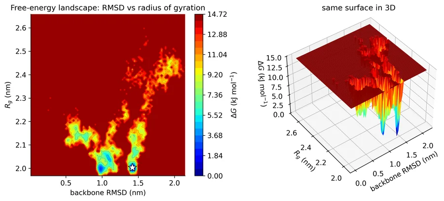

From atoms to answers.
BioInfoX is one of Pakistan's pioneering bioinformatics companies. We run molecular docking, molecular dynamics, DFT and bioinformatics studies for researchers worldwide, and we train the next generation of Pakistani scientists.
Adenylate kinase 1,656 heavy atoms moving between the open (PDB 4AKE) and closed (PDB 1AKE) states, from a real transition trajectory.
01 Docking and dynamics
We watch proteins move.
Docking finds where a molecule binds. Molecular dynamics shows whether it stays there. We set up the system, run up to ten simulations in parallel and send back trajectories, graphs, a movie and a written report.
- 01
Molecular docking
Docking, virtual screening and interaction analysis
- 02
Molecular dynamics
Simulation setup, trajectory analysis and binding-energy estimation
Adenylate kinase 1,656 heavy atoms moving between the open (PDB 4AKE) and closed (PDB 1AKE) states, from a real transition trajectory.
02 Quantum chemistry and materials
Electrons, orbitals and materials.
Density functional theory gives the electronic picture behind reactivity and stability: optimised geometries, HOMO–LUMO gaps and electrostatic potential maps, for drug molecules and for materials such as photocatalysts and perovskite solar cells.
- 03
DFT and quantum chemistry
Geometry optimization, HOMO–LUMO, MEP and electronic properties
Gold nanoparticle A Mackay icosahedron of 1,415 gold atoms with a thiolate shell. Built model.
03 Sequences and vaccines
From sequence to vaccine.
We analyse sequences, model proteins and work through biological data, then predict epitopes and design multi-epitope vaccine candidates in silico.
- 04
Bioinformatics
Sequence analysis, protein modelling and biological data analysis
- 06
Immunoinformatics
Epitope prediction and in silico vaccine design
B-DNA 34 base pairs at 3.38 Å rise and 36° twist. Built model.
04 Networks and prediction
Targets, networks and models.
Network pharmacology maps how a compound reaches its targets. QSAR, molecular descriptors and machine learning predict how a new molecule will behave before anyone makes it.
- 05
Network pharmacology
Target networks, enrichment analysis and Cytoscape visualizations
- 07
AI and cheminformatics
QSAR, molecular descriptors and predictive models
Target network Eight communities around hub targets. Illustrative.
05 Bioinformatics Training Program
Cohort 3 starts 23 October.
Five hands-on modules in live weekend classes, for students, faculty and professionals in Pakistan: machine learning, immunoinformatics and vaccine design, molecular dynamics, cancer bioinformatics, and mutation and variant analysis.
DPPC vesicle Coarse-grained lipid head groups from MDAnalysis test data, with their tails.
Sample output
100 ns, 23 graphs, one report.
Real graphs from one of our simulations: a 300-residue vaccine construct run in GROMACS for 100 ns and analysed with our standard pipeline.










Every simulation project receives these analyses as images and xmgrace files, with trajectories, structure snapshots, a trajectory movie and a written report.
See all 23 graphsFounder and Chief Executive Officer
Muhammad Nouman Majeed
PhD Scholar · Bioinformatician
Muhammad Nouman Majeed founded BioInfoX and leads it today. His research covers in silico vaccine design, molecular dynamics simulations and computational drug discovery, with a focus on protein–ligand interactions and multi-epitope vaccines. Alongside BioInfoX he works as a Research Associate at The University of Lahore.
06 One research partner
Empowering bioinformatics.
Every atom on this page took its place from real coordinates or exact geometry. Send us yours, and we will tell you what they do.
The BioInfoX mark 13 nodes and 24 links, drawn in 1,656 points.